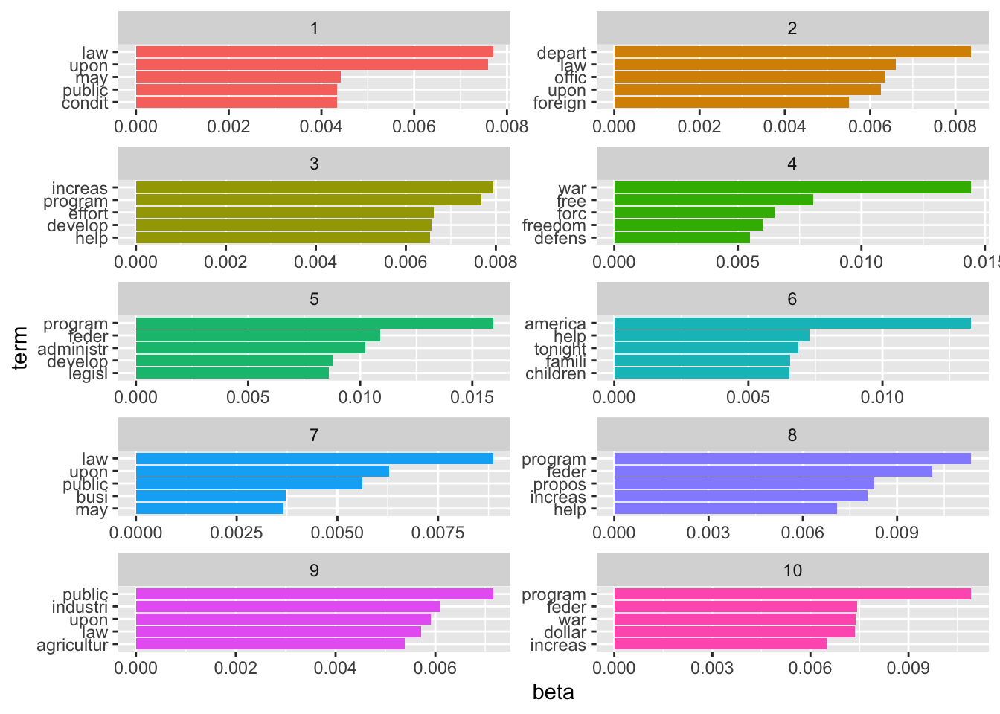
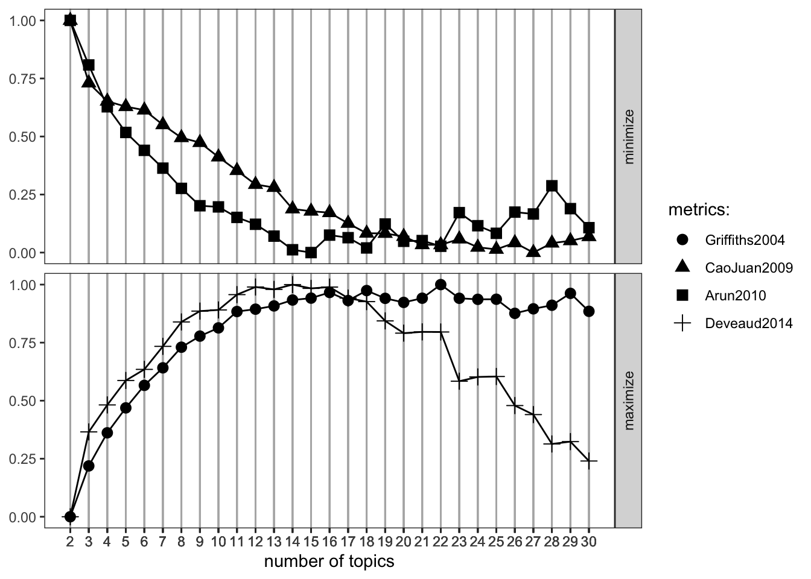
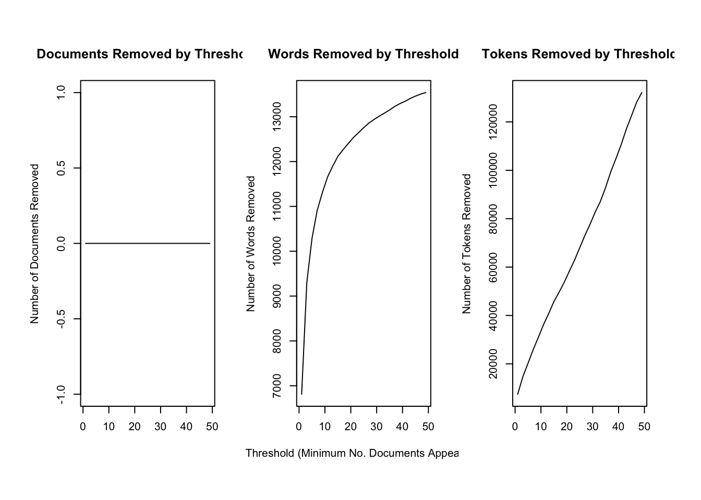
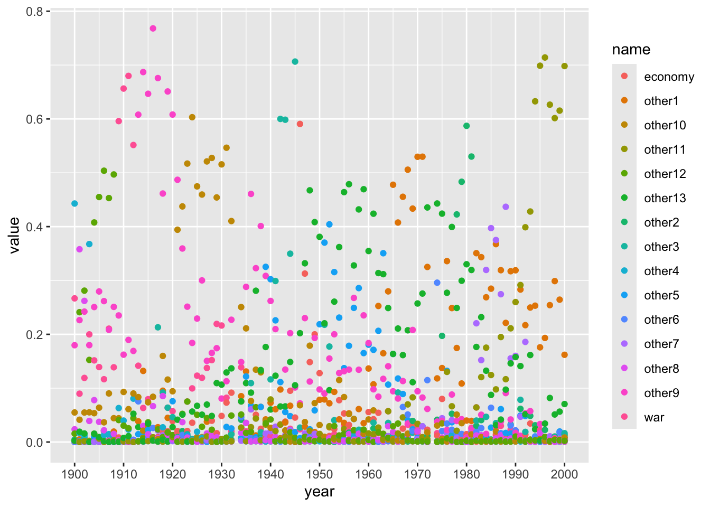

Chapter 12: Unsupervised Machine Learning
Latent Dirichlet Allocation (LDA)
In a former section, I, first, explored how the sentiment in the SOTU addresses has evolved over the 20th century. Then, we looked at the decade-specific vocabulary. This, paired with previous knowledge of what happened throughout the 20th century, sufficed to gain some sort of insight. However, another approach to infer meaning from text is to search it for topics. This is also possible with the SOTU corpus which we have at hand.
The two main assumptions of LDA are as follows:
- Every document is a mixture of topics.
- Every topic is a mixture of words.
Hence, singular documents do not necessarily be distinct in terms of their content. They can be related – if they contain the same topics. This is more in line with natural language use.
The following graphic depicts a flowchart of text analysis with the tidytext package.

What becomes evident is that the actual topic modeling does not happen within tidytext. For this, the text needs to be transformed into a document-term-matrix and then passed on to the topicmodels package (Grün et al. 2020), which will take care of the modeling process. Thereafter, the results are turned back into a tidy format, using broom so that they can be visualized using ggplot2.
Document-term matrix
To search for the topics which are prevalent in the singular addresses through LDA, we need to transform the tidy tibble into a document-term matrix first. This can be achieved with cast_dtm().
needs(sotu, tidyverse, tidytext, SnowballC, topicmodels)
sotu_clean <- sotu_meta |>
mutate(text = sotu_text |>
str_replace_all("[,.]", " ")) |>
filter(between(year, 1900, 2000)) |>
unnest_tokens(output = token, input = text) |>
anti_join(get_stopwords(), by = c("token" = "word")) |>
filter(!str_detect(token, "[:digit:]")) |>
mutate(token = wordStem(token, language = "en"))
sotu_dtm <- sotu_clean |>
filter(str_length(token) > 1) |>
count(year, token) |>
group_by(token) |>
filter(n() < 95) |>
cast_dtm(document = year, term = token, value = n)A DTM contains Documents (rows) and Terms (columns) and specifies how often a term appears in a document.
sotu_dtm |> as.matrix() %>% .[1:5, 1:5] Terms
Docs abandon abat abettor abey abid
1900 1 3 1 2 1
1901 2 0 0 0 4
1902 3 0 0 0 0
1903 3 1 0 0 0
1904 1 0 0 1 0Inferring the number of topics
We need to tell the model in advance how many topics we assume to be present within the document. Since we have neither read all the SOTU addresses (if so, we would hardly need to use the topic model), we cannot make an educated guess on how many topics are in there.
Making guesses
One approach might be to just provide it with wild guesses on how many topics might be in there and then try to make sense of them afterward.
needs(topicmodels, broom)
sotu_lda_k10 <- LDA(sotu_dtm, k = 10, control = list(seed = 123))
sotu_lda_k10_tidied <- tidy(sotu_lda_k10)The tidy() function from the broom package (Robinson 2020) brings the LDA output back into a tidy format. It consists of three columns: the topic, the term, and beta, which is the probability that the term stems from this topic.
sotu_lda_k10_tidied |> glimpse()Rows: 108,880
Columns: 3
$ topic <int> 1, 2, 3, 4, 5, 6, 7, 8, 9, 10, 1, 2, 3, 4, 5, 6, 7, 8, 9, 10, 1,…
$ term <chr> "abandon", "abandon", "abandon", "abandon", "abandon", "abandon"…
$ beta <dbl> 1.998668e-04, 2.063569e-04, 5.149531e-04, 3.737819e-04, 3.002458…Now, we can wrangle it a bit, and then visualize it with ggplot2.
top_terms_k10 <- sotu_lda_k10_tidied |>
group_by(topic) |>
slice_max(beta, n = 5, with_ties = FALSE) |>
ungroup() |>
arrange(topic, -beta)
top_terms_k10 |>
mutate(topic = factor(topic),
term = reorder_within(term, beta, topic)) |>
ggplot(aes(term, beta, fill = topic)) +
geom_bar(stat = "identity", show.legend = FALSE) +
scale_x_reordered() +
facet_wrap(~topic, scales = "free", ncol = 2) +
coord_flip()
Now the hard part begins: inductively making sense of it. But, of course, there is a large probability that we just chose the wrong number of topics. Therefore, before scratching our heads trying to come to meaningful conclusions, we should first assess what the optimal number of topics is.
More elaborate methods
LDA offers a couple of parameters to tune, but the most crucial one probably is k, the number of topics.
needs(ldatuning)determine_k <- FindTopicsNumber(
sotu_dtm,
topics = seq(from = 2, to = 30, by = 2),
metrics = c("Griffiths2004", "CaoJuan2009", "Arun2010", "Deveaud2014"),
method = "Gibbs",
control = list(seed = 77),
mc.cores = 16L,
verbose = TRUE
)
#determine_k |> write_rds("lda_tuning.rds")FindTopicsNumber_plot(determine_k)Warning: The `<scale>` argument of `guides()` cannot be `FALSE`. Use "none" instead as
of ggplot2 3.3.4.
ℹ The deprecated feature was likely used in the ldatuning package.
Please report the issue at <https://github.com/nikita-moor/ldatuning/issues>.
We would go with the 15 topics here, as they seem to maximize the metrics that shall be maximized and minimizes the other ones quite well.
sotu_lda_k15 <- LDA(sotu_dtm, k = 15, control = list(seed = 77))
sotu_lda_k15_tidied <- tidy(sotu_lda_k15)Sense-making
Now, the harder part begins: making sense of the different topics. In LDA, words can exist across topics, making them not perfectly distinguishable. Also, as the number of topics becomes greater, plotting them doesn’t make too much sense anymore.
topic_list <- sotu_lda_k15_tidied |>
group_by(topic) |>
group_split() |>
map_dfc(~.x |>
slice_max(beta, n = 20, with_ties = FALSE) |>
arrange(-beta) |>
select(term)) |>
set_names(str_c("topic", 1:15, sep = "_"))New names:
• `term` -> `term...1`
• `term` -> `term...2`
• `term` -> `term...3`
• `term` -> `term...4`
• `term` -> `term...5`
• `term` -> `term...6`
• `term` -> `term...7`
• `term` -> `term...8`
• `term` -> `term...9`
• `term` -> `term...10`
• `term` -> `term...11`
• `term` -> `term...12`
• `term` -> `term...13`
• `term` -> `term...14`
• `term` -> `term...15`Document-topic probabilities
Another thing to assess is document-topic probabilities gamma: which document belongs to which topic. By doing so, you can choose the documents that have the highest probability of belonging to a topic and then read these specifically. This might give you a better understanding of what the different topics might imply.
This shows you the proportion of words in the document which were drawn from the specific topics. In 1900, for instance, many words were drawn from the 13th topic.
sotu_lda_k15_document |>
group_by(document) |>
slice_max(gamma, n = 1) |>
mutate(gamma = round(gamma, 3))# A tibble: 99 × 3
# Groups: document [99]
document topic gamma
<chr> <int> <dbl>
1 1900 13 1
2 1901 2 1
3 1902 2 0.963
4 1903 8 0.811
5 1904 8 0.884
6 1905 8 1
7 1906 8 0.62
8 1907 8 0.364
9 1908 13 0.541
10 1909 11 1
# ℹ 89 more rowsAn interesting pattern is that the topics show some time-dependency. This intuitively makes sense, as they might represent some sort of deeper underlying issue.
LDAvis
LDAvis is a handy tool we can use to inspect our model visually. Preprocessing the data is a bit tricky though, therefore we define a quick function first.
needs(LDAvis, tsne)
prep_lda_output <- function(dtm, lda_output){
doc_length <- dtm |>
as.matrix() |>
as_tibble() |>
rowwise() |>
summarize(doc_sum = c_across(everything()) |> sum()) |>
pull(doc_sum)
phi <- posterior(lda_output)$terms |> as.matrix()
theta <- posterior(lda_output)$topics |> as.matrix()
vocab <- colnames(dtm)
term_sums <- dtm |>
as.matrix() |>
as_tibble() |>
summarize(across(everything(), ~sum(.x))) |>
as.matrix()
svd_tsne <- function(x) tsne::tsne(svd(x)$u)
LDAvis::createJSON(phi = phi,
theta = theta,
vocab = vocab,
doc.length = doc_length,
term.frequency = term_sums[1,],
mds.method = svd_tsne
)
}
json_lda <- prep_lda_output(sotu_dtm, sotu_lda_k15)sigma summary: Min. : 33554432 |1st Qu. : 33554432 |Median : 33554432 |Mean : 33554432 |3rd Qu. : 33554432 |Max. : 33554432 |Epoch: Iteration #100 error is: 14.6492669132726Epoch: Iteration #200 error is: 0.480842987811778Epoch: Iteration #300 error is: 0.352934150419718Epoch: Iteration #400 error is: 0.350138693822433Epoch: Iteration #500 error is: 0.34663750931103Epoch: Iteration #600 error is: 0.344841534222514Epoch: Iteration #700 error is: 0.344738946892104Epoch: Iteration #800 error is: 0.344718111059088Epoch: Iteration #900 error is: 0.344704095658581Epoch: Iteration #1000 error is: 0.344678922884819serVis(json_lda, out.dir = "vis", open.browser = TRUE)
servr::daemon_stop(2)Structural Topic Models
Structural Topic Models offer a framework for incorporating metadata into topic models. In particular, you can have these metadata affect the topical prevalence, i.e., the frequency a certain topic is discussed can vary depending on some observed non-textual property of the document. On the other hand, the topical content, i.e., the terms that constitute topics, may vary depending on certain covariates.
Structural Topic Models are implemented in R via a dedicated package. The following overview provides information on the workflow and the functions that facilitate it.

In the following example, I will use the State of the Union addresses to run you through the process of training and evaluating an STM.
needs(stm)
sotu_stm <- sotu_meta |>
mutate(text = sotu_text) |>
distinct(text, .keep_all = TRUE) |>
filter(between(year, 1900, 2000))
glimpse(sotu_stm)Rows: 109
Columns: 7
$ X <int> 112, 113, 114, 115, 116, 117, 118, 119, 120, 121, 122, 12…
$ president <chr> "William McKinley", "Theodore Roosevelt", "Theodore Roose…
$ year <int> 1900, 1901, 1902, 1903, 1904, 1905, 1906, 1907, 1908, 190…
$ years_active <chr> "1897-1901", "1901-1905", "1901-1905", "1901-1905", "1901…
$ party <chr> "Republican", "Republican", "Republican", "Republican", "…
$ sotu_type <chr> "written", "written", "written", "written", "written", "w…
$ text <chr> "\n\n To the Senate and House of Representatives: \n\nAt …The package requires a particular data structure and has included several functions that help you preprocess your data. textProcessor() takes care of preprocessing the data. It takes as a first argument the text as a character vector as well as the tibble containing the metadata. Its output is a list containing a document list containing word indices and counts, a vocabulary vector containing words associated with these word indices, and a data.frame containing associated metadata. prepDocuments() finally brings the resulting list into a shape that is appropriate for training an STM. It has certain threshold parameters which are geared towards further reducing the vocabulary. lower.thresh = n removes words that are not present in at least n documents, upper.thresh = m removes words that are present in more than m documents. The ramifications of these parameter settings can be explored graphically using the plotRemoved() function.
processed <- textProcessor(sotu_stm$text, metadata = sotu_stm |> select(-text))Building corpus...
Converting to Lower Case...
Removing punctuation...
Removing stopwords...
Removing numbers...
Stemming...
Creating Output... #?textProcessor() # check out the different arguments
#?prepDocuments()
plotRemoved(processed$documents, lower.thresh = seq(1, 50, by = 2))
prepped_docs <- prepDocuments(processed$documents,
processed$vocab,
processed$meta,
lower.thresh = 3,
upper.thresh = 80)Removing 9638 of 14346 terms (43586 of 136130 tokens) due to frequency
Your corpus now has 109 documents, 4708 terms and 92544 tokens.out <- list(documents = processed$documents,
vocab = processed$vocab,
meta = processed$meta)Now that the data is properly preprocessed and prepared, we can estimate the actual model. As mentioned before, covariates can influence topical prevalence as well as their content. I assume topical prevalence to be influenced by the party of the speaker as well as the year the SOTU was held. The latter is assumed to influence the topical prevalence in a non-linear way (SOTU addresses usually deal with acute topics which do not gradually build over time) and is therefore estimated with a spline through the s() function that comes from the stm package. It defaults to a spline with 10 degrees of freedom. Moreover, I assume the content of topics to be influenced by party affiliation. Both prevalence = and content = take their arguments in formula notation.
As determined before, I assume the presence of K = 15 topics (stm also offers the searchK() function to tune this hyperparameter)
sotu_content_fit <- stm(documents = prepped_docs$documents,
vocab = prepped_docs$vocab,
K = 15,
prevalence = ~party + s(year),
content = ~party,
max.em.its = 75,
data = prepped_docs$meta,
init.type = "Spectral",
verbose = FALSE)
#sotu_content_fit |> write_rds("sotu_stm_fit_k15.rds")Let’s look at a summary of the topics and their prevalence. For this, we can use a shiny app developed by Carsten Schwemmer
devtools::install_github("cschwem2er/stminsights")
needs(stminsights)
prepped_docs$meta$party <- as.factor(prepped_docs$meta$party)
prep <- estimateEffect(1:15 ~ party + s(year),
sotu_content_fit,
meta = prepped_docs$meta,
uncertainty = "Global")
map(1:15, \(x) summary(prep, topics = x))
#summary(prep, topics = 10)
save(prepped_docs, sotu_content_fit, prep, out, file = "stm_insights.RData")
run_stminsights()Seeded Topic Models
Another flavor of topic models are seeded topic models. They give you more control over the topics that are actually “worth finding” since you can predetermine the words that make up a certain topic. We are here going to use the SOTU corpus from before. We need it to be in the format of a document-feature matrix.
needs(quanteda, seededlda)
sotu_dfm <- sotu_clean |>
add_count(year, token) |>
group_by(token) |>
filter(n() < 95) |>
cast_dfm(year, token, n)Also, we needs to define our topics in a dictionary.
dict <- dictionary(
list(
war = c("war", "missile", "attack", "soldier"),
economy = c("money", "market", "economy")
)
)Then we can train the model. We will again use k = 15 – hence, we need to set residual = 13 – this will give us 13 remaining + 2 defined topics.
lda_res <- textmodel_seededlda(sotu_dfm,
dict,
residual = 13,
batch_size = 0.01,
auto_iter = TRUE,
verbose = TRUE)Fitting LDA with 15 topics
...initializing
...Gibbs sampling in up to 2000 iterations
......iteration 100 elapsed time: 0.91 seconds (delta: 0.27%)
......iteration 200 elapsed time: 1.77 seconds (delta: 0.25%)
......iteration 300 elapsed time: 2.57 seconds (delta: 0.14%)
......iteration 400 elapsed time: 3.37 seconds (delta: -0.49%)
...computing theta and phi
...completeLet’s have a look at the words in the topics:
topic_words <- lda_res |>
pluck("phi") |>
t() |>
as_tibble(rownames = NA) |>
rownames_to_column("term") |>
pivot_longer(-term) |>
group_by(name) |>
slice_max(value, n = 10) Let’s check out the strength of the topics in the particular documents/years:
docs <- rownames(sotu_dfm) |>
enframe(name = NULL, value = "year") |>
bind_cols(lda_res$theta |> as_tibble())
strongest_belongings <- docs |>
pivot_longer(-year, names_to = "topic") |>
group_by(year) |>
slice_max(value, n = 5)
docs |>
pivot_longer(-year) |>
mutate(year = as.integer(year)) |>
ggplot() +
geom_point(aes(x = year, y = value, color = name)) +
scale_x_continuous(breaks = seq(1900, 2000, 10))
This is just a first glimpse into the capabilities of seeded topic models. Of course, you can now do more, adapt the seed words etc., and finally visualize the topics. Just the way we did above.
Further readings
- Chapter on LDA in Text Mining with R
- A
shinyintroduction to STMs by Thierry Warin - How to train and use seeded topic models
References
Grün, Bettina, Kurt Hornik, David Blei, John Lafferty, Xuan-Hieu Phan, Makoto Matsumoto, Nishimura Takuji, and Shawn Cokus. 2020. “Topicmodels: Topic Models.”
Robinson, David. 2020. “Broom: Convert Statistical Analysis Objects into Tidy Data Frames.”